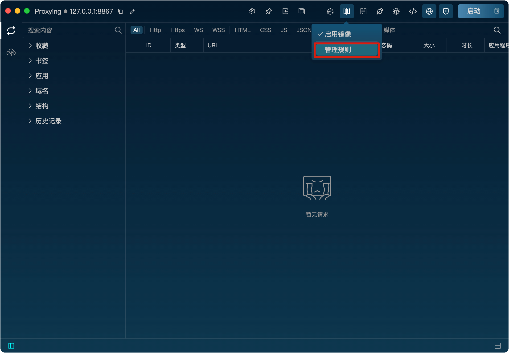
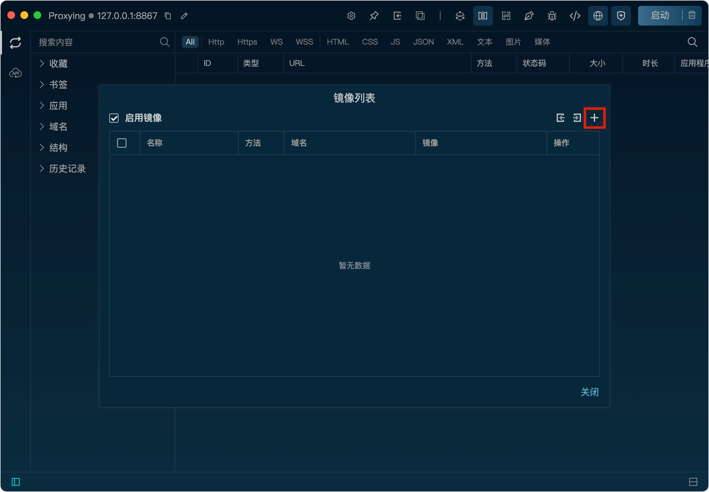
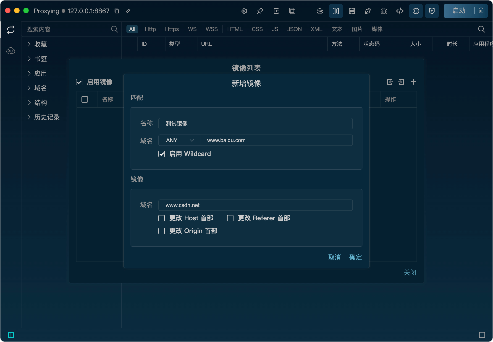

镜像
功能
镜像功能可以将请求的域名替换为指定的域名，从而实现请求的重定向。效果类似于修改hosts文件，但更为方便快捷。
开启镜像功能
将鼠标悬浮到镜像图标上，点击“启动镜像”按钮即可开启镜像功能。
开启后，镜像图标会高亮显示，表示镜像已开启。
新增镜像规则
1、将鼠标悬浮到镜像图标上，点击“规则管理”按钮打开镜像规则列表。

2、在规则列表弹框里，点击“+”按钮，打开新增规则弹窗。

3、在弹窗里，填写匹配规则、镜像，点击“确定”按钮即可新增规则。匹配规则支持wildcard。

替换关键头部
镜像功能支持替换请求头部的Host、Origin和Referer字段，确保请求能够被服务器正确响应（有些服务器会校验这些字段，如果和镜像域名不一致会阻止响应）。